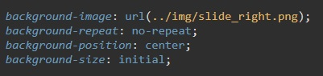
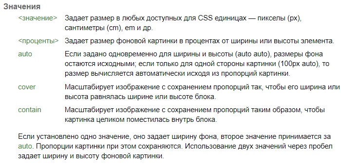
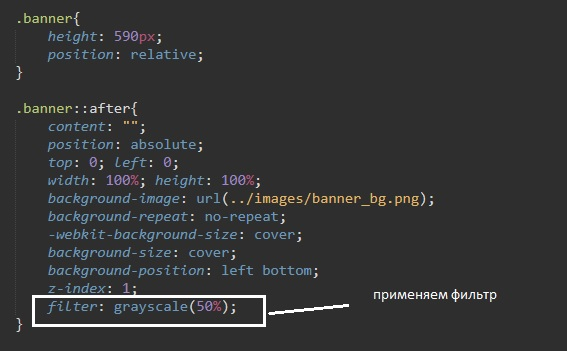

Стиль background
Этот стиль отвечает за фон страницы
синтаксис:
html {
background: значения;
}
Background-color – цвет фона
Background image – фон картинкой
пример:
no-repeat - не замощать картинкой фон
center - разместить картинку по центру
background-size: 6rem; - задаем размер фонового изображения
какие еще возможны варианты background-size:
По умолчанию картинка будет заполнять фон страницы.
В том случае, если это нас не устраивает, мы можем указать расположении картинки на фоне, а так же закрасить остальное пространство любым цветом:
html {
background: url (‘pictures.img’) no-repeat #000000
center top repeat-x;
}
no-repeat – говорит о том, что фон не заполнится картинкой
#000000 – цвет который заполнит остальное пространство страницы
Center – расположение картинки по центру страницы
Top – расположение картинки сверху
repeat-x – замостить картинку по оси Х
repeat-y – замостить картинку по оси У
Задает начальное положение фонового изображения, установленного с помощью свойства background-image. В CSS3 допустимо указывать несколько значений для каждого фона, перечисляя значения через запятую.
У свойства background-position два значения, положение по горизонтали (может быть — left, center, right) и вертикали (может быть — top, center, bottom). Кроме использования ключевых слов положение также можно задавать в процентах, пикселах или других единицах. Если применяются ключевые слова, то порядок их следования не имеет значения, при процентной записи вначале задается положение рисунка по горизонтали, а затем, через пробел, положение по вертикали. Отношение между используемыми ключевыми словами и процентной записью следующее.
Пример:
Если вы поместите содержимое элемента во внутреннюю оболочку, вы можете установить ее поверх псевдо-элемента, который просто выполняет роль фона.
Пример
Свойство background-attachment устанавливает, будет ли прокручиваться фоновое изображение вместе с содержимым элемента. Изображение может быть зафиксировано и оставаться неподвижным, либо перемещаться совместно с документом. Можно указать несколько значений для ряда фоновых изображений, перечисляя значения через запятую.
Значения